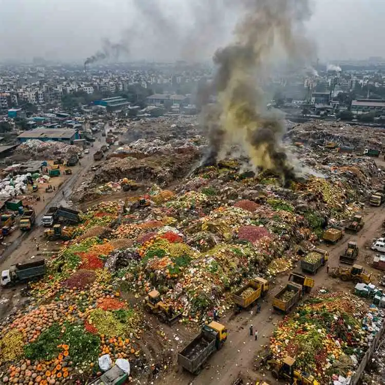
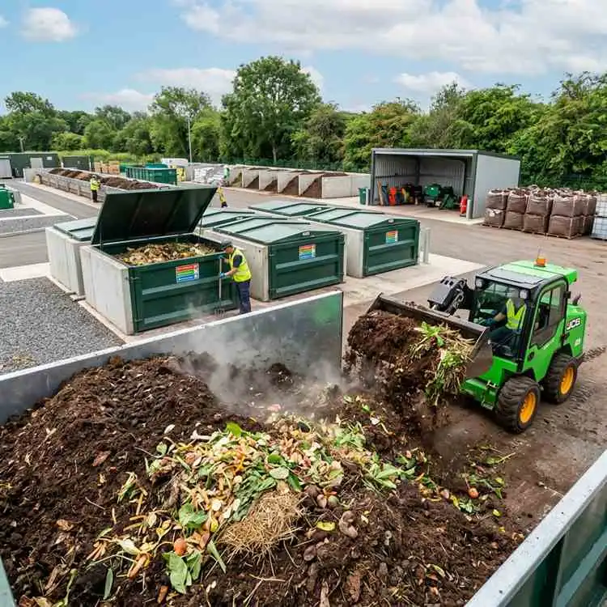
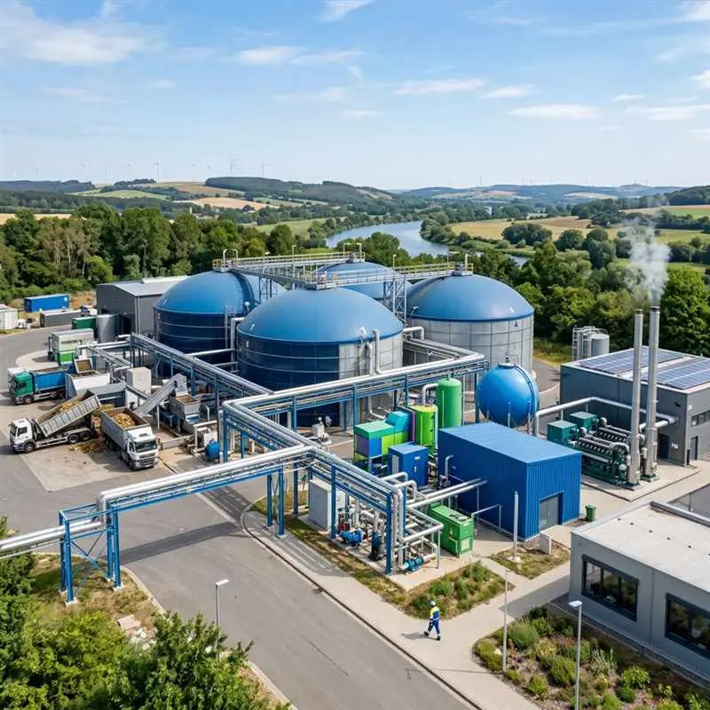

STACKLY
Loading Experience...
Loading Experience...

Transforming India's food waste crisis into opportunities for a sustainable future through innovative composting and bio-energy solutions.
In India, around 70 million tonnes of food is wasted annually. This amounts to 45% of the total food generated and translates into an economic loss of around ₹1 lakh crore rupees. Untreated food waste causes multifarious environmental, social and economic problems.

Food waste ending up in landfills directly contributes to greenhouse gas production, accelerating climate change at an alarming rate.
Food waste directly indicates wastage of water — a large quantity of water is required for food production, all of which is lost with discarded food.
Leachate production in landfills attributed to food waste contaminates groundwater and soil, causing long-term ecological damage.
Food wastage leads to an irreparable loss of energy and economic resources invested across the entire production chain.
Food waste management as per the Solid Waste Management Rules, 2016, ensures legal compliance and minimizes environmental impact while unlocking economic opportunities.
Reduces greenhouse gases, conserves resources, and minimizes landfill waste. Composting enriches soil and benefits agriculture.
Saves costs, creates jobs in waste collection and composting, and generates revenue through compost and biogas production.
Supports a circular economy by converting waste into compost, biogas, or animal feed while preserving biodiversity.
Pests, diseases, and unsanitary conditions are eliminated through a well-run food waste management system.

Mandates businesses to segregate waste at source, categorizing food waste as Wet Waste. Ensures decentralized composting compliance. EPR guidelines encourage producers to manage lifecycle packaging waste.
Under Section 135 of Companies Act 2013, businesses with net worth above ₹500 crore must spend 2% of average net profits on CSR. Many food industry businesses invest in reducing and redistributing food waste.
The Swachh Bharat Mission promotes segregation and management of food waste in commercial sectors, driving nationwide adoption of sustainable waste practices.
Stackly Zero Waste offers comprehensive food waste solutions including on-site composting and bio-methanation, ensuring efficient wet waste management with full traceability and compliance.
Converts food waste into nutrient-rich compost using modular aerobic composting units or in-vessel systems. Caters to diverse scales — from small offices managing 10–20 kg/day to industrial townships processing up to 1.5 TPD.

Processes food waste through anaerobic digestion, generating biogas (renewable energy) and digestate (organic fertilizer). Ideal for medium to large-scale operations handling 500 kg/day and beyond.
Food waste occurs at the retail or consumption stage when edible food is discarded. It can be categorized into three types:
Food that was once edible but becomes inedible by the time of disposal — for example, spoiled fruits and vegetables.
Items sometimes consumed but not always — like potato skins, bread crusts, or outer vegetable leaves.
Occurs during production, processing, and distribution stages due to inefficiencies such as poor harvesting techniques or inadequate storage (e.g., milk products decaying due to insufficient cold storage).
Happens at the retail or consumption stage when edible food is discarded (e.g., paneer wasted by attendees at a wedding party despite being perfectly edible).
Efficient food waste management directly contributes to the United Nations Sustainable Development Goals and corporate ESG frameworks.
Reducing food waste directly addresses food security and malnutrition affecting 200 million Indians.
Promoting circular economy principles and mindful consumption patterns across the value chain.
Reducing greenhouse gas emissions from landfilled organic waste through proper management and energy recovery.
Mitigating environmental impact and facilitating social equality through equitable distribution of food resources.
Food waste management provides comprehensive food waste solutions including on-site composting and bio-methanation, ensuring efficient wet waste management. On-site methods convert food waste into compost or biogas for reuse, promoting sustainability. For locations without space or resource limitations, off-site processing options ensure responsible waste treatment while maintaining traceability and compliance.
Food loss occurs during the production, processing, and distribution stages due to inefficiencies such as poor harvesting techniques or inadequate storage. In contrast, food waste happens at the retail or consumption stage when edible food is discarded. For example, food loss is milk products that decay due to insufficient cold storage facilities, whereas food waste is paneer wasted by attendees at a wedding party.
The different ways of food waste management include Composting (aerobic decomposition of organic matter), Anaerobic Digestion/Biomethanation (producing biogas and digestate), Upcycling (converting waste food into new products), Redistribution (donating surplus food), and source reduction through mindful purchasing and consumption planning.
Food waste management is extremely important because food wastage goes against the idea of sustainability. Wastage of food results in the loss of resources invested in its production — water, energy, land, labor, and capital. Proper management reduces environmental pollution, creates economic value, and supports social equity by redirecting food resources to those in need.
Strategies include promoting portion control, optimizing inventory management, organizing awareness campaigns, encouraging the use of surplus food apps or donation programs, implementing smart procurement systems, and training staff on proper storage practices to prevent excess food waste generation.
Wet waste is also called organic waste. Wet waste management involves handling materials like food waste, vegetable peelings, garden waste, dairy products, and other biodegradable materials. Unlike dry waste, wet waste has high moisture content and requires specific management approaches like composting or anaerobic digestion.
Let's discuss the details of your food waste management needs. Our experts are ready to help you build a sustainable waste management strategy.